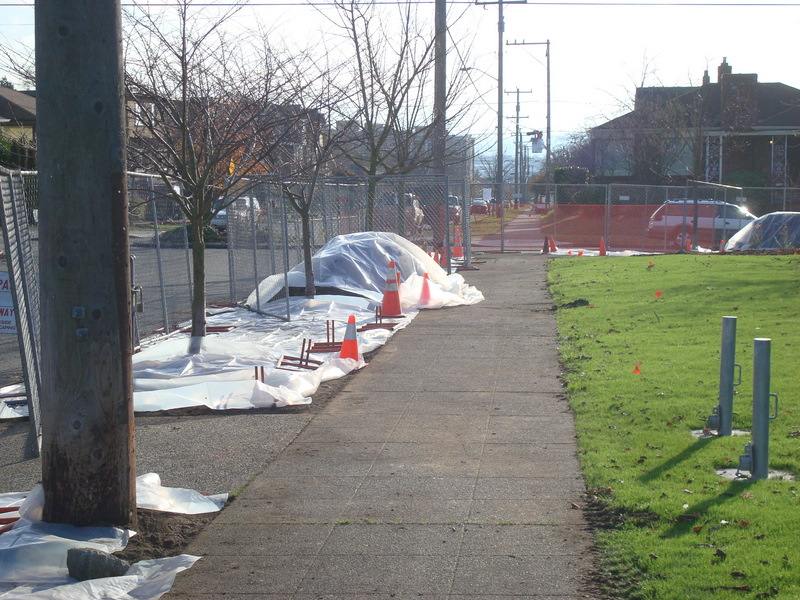
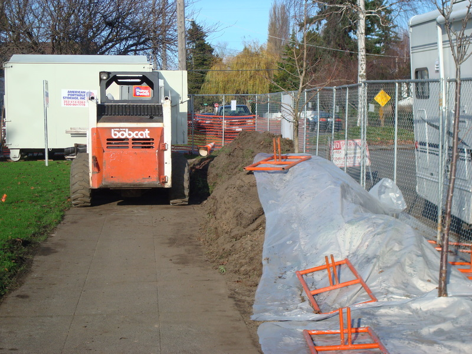
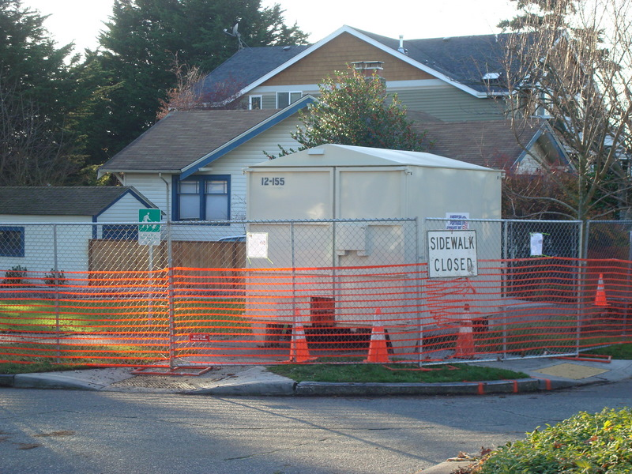
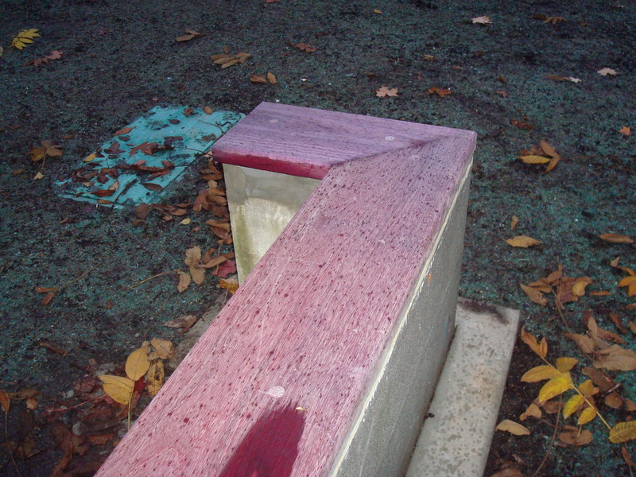
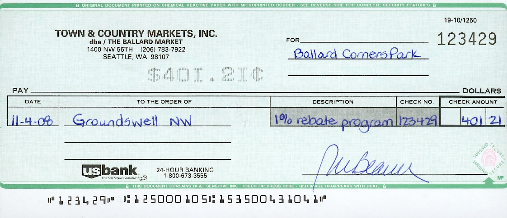
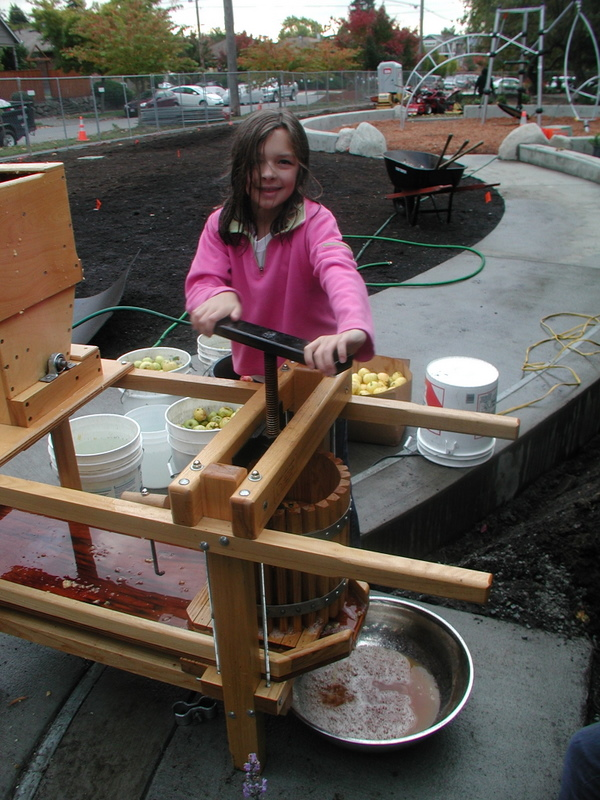
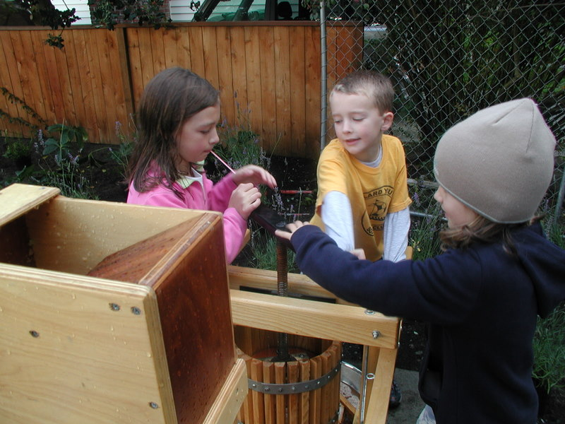

On my way to work today, I grabbed a couple of pictures of the progress. There was a three week delay in construction in December as the ground was either frozen or snow covered or both.
(more…)
Posted on January 7th 2009 by David Folweiler in construction | Comments Off on Sawcutting and Tree Transplant |
A few pictures from today’s visit with Jeff Felton of Dariotis Construction today. I was checking on construction progress. We ran into a potential snag. A previous survey did not turn up a conduit that runs a few feet under the parking strip next to the curb. But a recent utility locate and a hand dug hole at the north end of the parking strip on 17th found the conduit, believed to potentially contain telephone wires or fiber optics. This is a potential problem because it’s close to the deepest point in the retention cells and it was discovered only a few feet below the current grade. I called up Jeff Mumma of Barker Landscape Architects; he’s going to discuss the discovery with the designers and civil engineer.
Jeff Felton has been very good about getting his crew to protect trees and prevent erosion. Notice the plastic covering the now sod-free soil.
sod removal along parking strip
heavy equipment on site
Posted on December 11th 2008 by David Folweiler in construction | Comments Off on Park progress – Phase 2 |
Today marked a momentous date. I signed a document directing Dariotis Construction to proceed. It’s a document called a Notice to Proceed. It says that they should begin construction and be “substantially” done in 100 calendar days (3/19/09) and physically complete in 120 calendar days (4/8/09) or be penalized $300 per day. I gave Chris an extra 5 days since the official “pre-con” (this is construction speak which I am trying hard to grasp) or pre-construction meeting won’t happen until 12/9. It felt odd to have this sort of power. I have this nagging feeling that Seattle City officials will suddenly yank the rug out from underneath me by saying that I did something really wrong.
John Barker and Jeff Mumma (from Barker Landscape Architects) and I met Chris Dariotis and his crew on site today to kick off construction. Chris’ crew moved the fence to the curb, set up a tool bin, and set up a bit of the erosion control (filter cloth in the catch basin).
Later, Will Stevenson came by because Jeff Mumma called him about a leak in the irrigation system. It was nice to see him again. There was a brief mention in the morning by Chris that he was considering using WS Contractors (our contractor for Phase 1) as a concrete subcontractor. I admire their concrete work and approved of the idea.
Also, Jody Stewart came by with some fliers for the fence – mainly talking about donor tiles. We put them up with zip ties. Jonah (Jody’s infant son) and Gage (her aging Lab) looked on. Gage pissed here and there and Jonah made cooing noises. The sun shone. It was all pleasant. Some day, I will watch as Jonah plays at the park and Gage waters the plants or rests in the park.

(more…)
Posted on December 4th 2008 by David Folweiler in construction,Meetings,News | Comments Off on Phase 2 Begins |
I suppose that this is circular linking, but the MyBallard blog plugged us and our donor tiles recently.
Posted on December 3rd 2008 by David Folweiler in News | Comments Off on My Ballard Plugs the Park |

Phase 1 is done!
Michael Harthorne at the Ballard News Tribune wrote this nice article about the park.
Posted on December 3rd 2008 by David Folweiler in News | Comments Off on Mention in the Ballard News Tribune |
Here are the bids for phase 2.
Posted on November 13th 2008 by David Folweiler in construction | Comments Off on Bids are in for Phase 2 |
How exciting! Â The concrete foundation “ruins” have seatcaps made of purpleheart (a tropical hardwood) and the grass has sprouted.

(more…)
Posted on November 13th 2008 by David Folweiler in construction | Comments Off on New seating and new grass! |

Your receipts become cash for the park. Gabriella recently handed in over $40,000 worth of receipts, which became this check. Thanks, Ballard Market!
Posted on November 10th 2008 by David Folweiler in Fundraising | Comments Off on Yeah, Ballard Market! |
John Barker is posting this ad in the Daily Journal of Commerce today. Â Bids are due Wednesday, November 12th at 4 PM.
Posted on October 27th 2008 by David Folweiler in construction | Comments Off on Out to Bid on Phase 2 |
John Barker brought his cider press to the planting party on Saturday. We mixed park apples with some brought from home. The resulting cider was delicious. These are his photos.
Camille presses apples
Camille, Daniel and Lili press apples for cider together
Posted on October 27th 2008 by David Folweiler in Events | Comments Off on Cider Press |


{kind=link}
{kind=link}
{kind=link}
{kind=link}
{kind=link}
{kind=link}
{kind=link}
{kind=link}